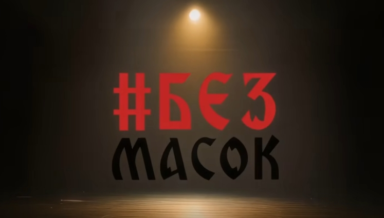
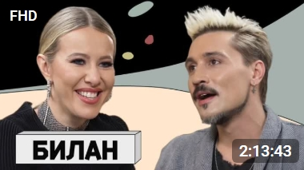
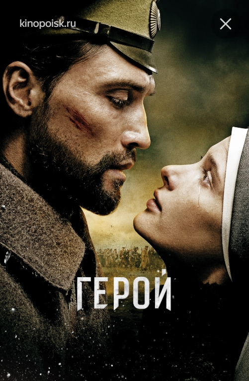

Главная | Общая информация | История | Дискография | Фильмография | Источники | Заказать Диск | Контакты
| Год | Название | Трейлер/Тизер | Афиша | Примечание |
| 2025 | #БезМасок Дима Билан |  | Это откровенный выпуск шоу Влада Череватого, где артист поделился личными историями — о детстве, карьере и вещах, о которых обычно не говорят в интервью. В разговоре затронули несколько тем: отношение к эзотерике (Дима рассказывал, что его мама увлекалась гаданиями, а в роду, по словам младшей сестры, был шаман), непростые моменты в жизни (например, случай предательства друга) и даже вопросы, связанные с мистикой вроде «подкладов». Ещё Билан вспоминал эпизоды из жизни, в том числе рассказывал о случаях, когда сталкивался с чрезмерным вниманием фанатов. Формат шоу предполагает честный и глубокий разговор без заготовленных ответов, поэтому выпуск получился особенно личным. | |
| 2023 | ДИМА БИЛАН: об алкоголизме, Маргарите Симоньян и главных секретах своей жизни |  | В этом откровенном интервью Дима Билан предельно честно говорит о непростых вещах — в том числе о своей борьбе с алкогольной зависимостью: артист не скрывает, что обращался к врачам и осознанно работает над проблемой. Отдельно он делится мнением о Маргарите Симоньян, отмечая её непредвзятость и значимость её позиции в медиапространстве. В разговоре с Ксенией Собчак певец приоткрывает и личные «секреты» — о напряжённых моментах в карьере, о том, как его «делили» в период юридических споров, и о колоссальной эмоциональной нагрузке, которая сопровождает публичную жизнь. При этом Билан старается сохранять баланс между исповедальностью и самоиронией — поэтому в интервью есть и тяжёлые признания, и лёгкие, почти шутливые реплики. Выпуск получился эмоционально насыщенным и позволяет увидеть артиста не как глянцевый образ, а как живого человека со своими уязвимостями и принципами. | |
| 2016 | Кинофильм Герой |  | Больше всего экранного времени у Димы Билана в фильме «Герой» (2016) — там он не просто снимается, а играет главную роль, причём сразу двух персонажей: поручика Андрея Долматова (времен Первой мировой войны) и его правнука Андрея Куликова (современность). Это полнометражная картина почти на два часа, и Билан фактически держит на себе весь сюжет — можно сказать, это его самая большая киноработа по объёму. |
© Все права защищены. А.Д. Кобелева. ЭФЦ331-1. 2026